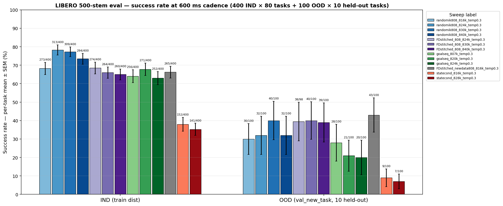
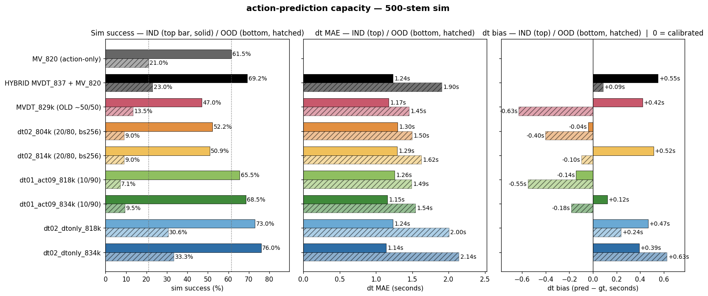
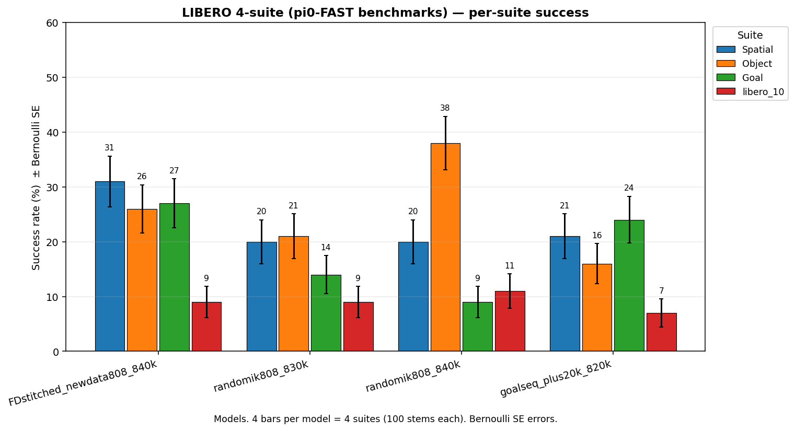
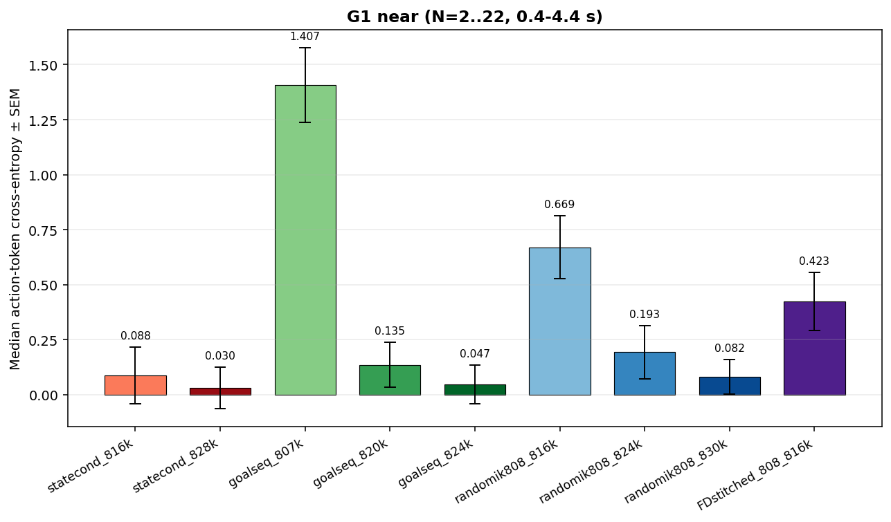
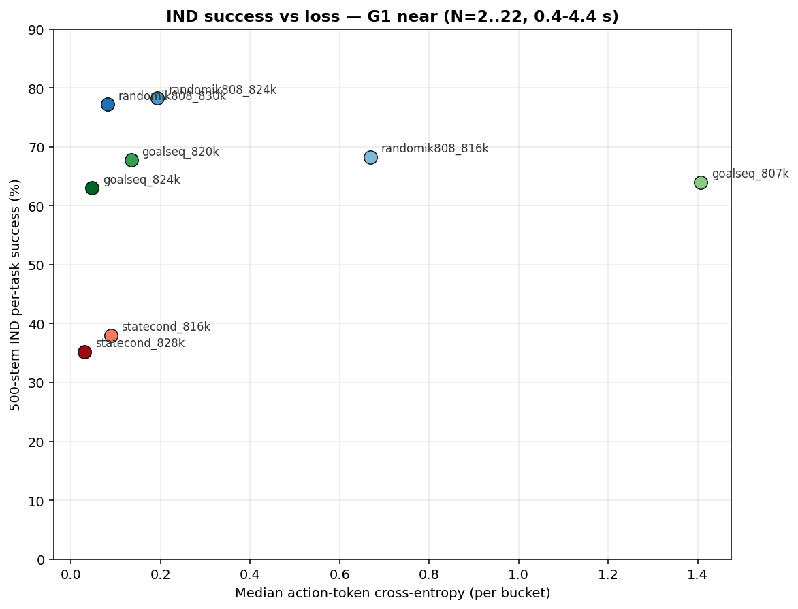
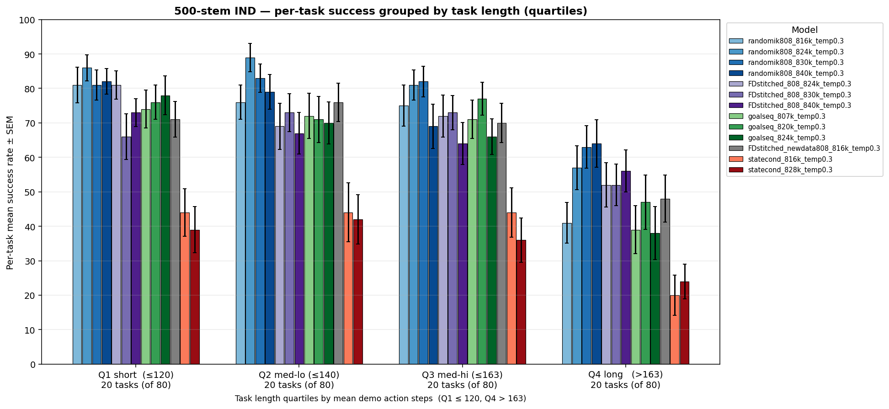
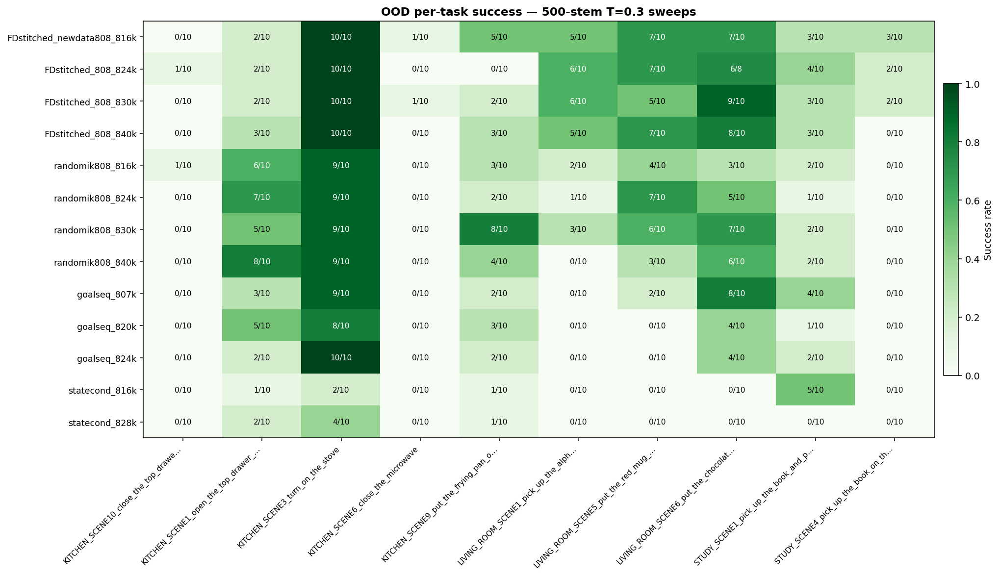

← Generalizability Checking for updates…
PSI2 Robot World Model — LIBERO-90 sim eval
Live cross-model episode success on the 500-stem manifest (400 IND across 80 seen tasks + 100 OOD across 10 held-out tasks). Auto-refreshed by the 15-min update cron.
Best IND per-task ± SEM (500-stem)
78.2%
randomik808 RGB 824k, T=0.3, 600 ms cadence — per-task mean ± 2.8%, 313/400 raw episodes.
Best OOD per-task ± SEM (500-stem)
43.0%
FDstitched 808 → 816k, T=0.3, 600 ms cadence — per-task mean ± 9.2%, 43/100 raw episodes.
▸ LIBERO sim success — 500-stem eval (per-task mean ± SEM) #
Per-task episode success rate on the 500-stem sim eval (400 IND × 80 tasks + 100 OOD × 10 held-out tasks) at 600 ms replan
Bar = per-task success rate averaged across all tasks with rollouts in this sweep;
error bar = standard error of that mean across tasks (not per-episode Bernoulli).
Current bars (13 sweeps, all T=0.3 serial): plus20k goalseq (807 / 820 / 824),
statecond (816 / 828), FDstitched 808 (816 / 824 / 830 / 840), and its
RGB-only twin from the same randomik808 base at 4 checkpoints
(816 / 824 / 830 / 840k). RGB peaks at IND 78% / OOD 32% at 824k
then plateaus; FD peaks OOD 43% at 816k with a ~66% IND floor across
816/824/830/840. Extending training past 830k gives no further IND gain
for either family and slightly regresses on OOD for RGB (40→33 pp
830→840). FDstitched's OOD advantage over its RGB twin shrinks with
training: +13pp at 816k, +7.5pp at 824k, ~tied at 830k/840k.
sqrt-reweight sweeps excluded.

▸ DT vs action-prediction capacity — MVDT training-mixture study (Aug 2026) #
What happens when the same 8B model has to jointly predict a distance-to-goal (dt) token AND actions? The dt head is useful; the action head loses bandwidth.
Setup. Two action-notation families both trained from the same
799k base. MV =
Hybrid finding (headline). Loading MVDT_837k AND MV_820 on the same GPU — MVDT samples dt, MV_820 decodes actions with that N — beats both parents on both splits:
+7.7 pp IND / +2.0 pp OOD over the strongest parent, +21 pp IND over
MVDT alone. MVDT's dt head is strictly useful — it lifts MV. But MVDT's
own action head is far weaker than MV_820's despite same architecture
and same base checkpoint.
Training-mixture ablation — sim success, dt MAE, dt bias. All models loaded from the same 799k base; each row is a distinct training mixture ± checkpoint. Solid bars = IND (400 stems), hatched bars = OOD (100 stems). Dotted verticals in the sim panel mark MV_820 IND (61.5%) and OOD (21.0%) — the action-only reference.
rgb{N},rgblh{N},rgb0,rgblh0→a0: two
views, caller picks goal-frame index N. MVDT = trained jointly
on MV sequences plus rgb0^g,rgblh0^g,rgb0,rgblh0→dt0 +
...,dt0→a0 sequences where dt is a discrete
frames-to-goal bin. At inference "dt_predict_each" means: every 600 ms
re-plan, sample dt, convert N = dt_bin // 5, then decode a0
from MV notation.
Hybrid finding (headline). Loading MVDT_837k AND MV_820 on the same GPU — MVDT samples dt, MV_820 decodes actions with that N — beats both parents on both splits:
| recipe | IND | OOD |
|---|---|---|
| MV_820 alone (action-only, best mv_median_N7) | 61.5% | 21.0% |
| MVDT_837 alone (mv_median_N7 mode) | 48.2% | 6.0% |
| HYBRID MVDT_837 dt + MV_820 action | 69.2% | 23.0% |
Training-mixture ablation — sim success, dt MAE, dt bias. All models loaded from the same 799k base; each row is a distinct training mixture ± checkpoint. Solid bars = IND (400 stems), hatched bars = OOD (100 stems). Dotted verticals in the sim panel mark MV_820 IND (61.5%) and OOD (21.0%) — the action-only reference.

What this tells us:- The old ~50/50 recipe plateaued at ~47% IND and drifted dt bias monotonically upward (+0.12 s → +0.63 s from 818k → 860k) — extra training progressively wrecked dt calibration without lifting sim.
- Shifting to 20/80 (dt02) or 10/90 (dt01_act09) recovers 5-20 pp IND depending on the mixture. dt01_act09_834k reaches 68.5% IND, hitting the same ballpark as the hybrid (69.2%) with a single model.
- dt02_dtonly is the surprise winner: 76.0% IND / 33.3% OOD. Beats the hybrid IND (+6.8 pp) and OOD (+10 pp) despite being one model. Also beats old MVDT by +26 IND, +20 OOD. Best MVDT-family result to date.
- The name "dtonly" is misleading — it does train on action sequences too; the labels reflect training-mode-config ratios, not literal exclusivity. The exact
mode_configyaml diff hasn't been done yet and is the highest-signal next debug step. - Per-frame static dt eval (MVDT_860, 40 stems): IND MAE 2.84 s with +2.8 s bias at episode start (gt≈1.6 s, pred≈6.8 s) — over-prediction on real training-domain video frames is ~2× worse than in sim rollouts. Sim visits a narrower state distribution than training and masks the drift.
All dt errors are in seconds (converted from the raw psi2-frame bins that the model was trained on: 1 bin = 1 psi2-frame = 0.2 s).
Files:
hybrid driver evals/libero/inference/predict_reset_closed_loop_hybrid.py (+ _stitched.py for RGB action head);
per-frame dt eval evals/libero/inference/dt_static_frame_eval.py;
full report rwm_results/libero_sim/REPORT_dt_vs_action_capacity_2026_08_18.md.
▸ LIBERO 4-suite — pi0-FAST benchmarks (Spatial / Object / Goal / libero_10) #
Per-suite episode success rate on the 4 pi0-FAST LIBERO benchmarks (100 stems each) at 600 ms replan
Grouped bars: 4 suites × N model checkpoints. Bar color follows the same
family/step convention as the 500-stem chart above. Error bars are
per-stem Bernoulli SE (√p(1−p)/n). Only models with ≥95% coverage across
all 4 suites are shown. These 4 suites are the pi0-FAST evaluation set —
distinct from the LIBERO-90 train pool, so they're a stronger
generalization test than the OOD split of the 500-stem eval.
Headline pattern: FDstitched dominates 3 of 4 suites at 816k (Spatial 34%, Goal 25%, libero_10 11%), while RGB 840k is strongest on Object (38%). libero_10 (compositional multi-step tasks) is universally hard for every model: no ckpt exceeds ~11%.
Headline pattern: FDstitched dominates 3 of 4 suites at 816k (Spatial 34%, Goal 25%, libero_10 11%), while RGB 840k is strongest on Object (38%). libero_10 (compositional multi-step tasks) is universally hard for every model: no ckpt exceeds ~11%.

▸ LIBERO 500-stem — episode video viewer #
Watch success and failure rollouts across the 500-stem models
Pick a model, filter by success/failure and IND/OOD split, then click
an episode to play. Only fully-covered T=0.3 serial sweeps are listed
(same filter as the 500-stem bar plot above). Videos are 600 ms
cadence rollouts rendered inline by the sweep runner. If no videos
show up, the live server (serve.py) is not running — the Artifact
version does not have server-side file access.
Suite:
Model:
Outcome:
Split:
Filter stem:
| Outcome | Split | Stem |
|---|
Click an episode above to play.
▸ Per-bucket action-token loss — all RGB-family 500-stem models #
Median teacher-forced loss at a specific goal-frame bucket, across all RGB-family 500-stem models
For every model in the 500-stem chart above (excluding sqrt-reweight), we
ran a 50-sample teacher-forced loss eval per goal-frame bucket. Each
model uses its own training notation — RGB families
Note on FDstitched: flow codes on LIBERO stitched files are pre-tokenized with
rgb0,rgbN,a0, FDstitched rgb0,d0,dN,rgbN,f01,a0,
statecond rgb0,rgbN,pr0,a0 — but loss is computed only over
the action tokens (mask_all_except:action), so bars
are directly comparable across families: each is the average cross-entropy
the model assigns to the ground-truth action given its native conditioning.
Use the dropdown to switch buckets. Bar color = family (matches the bar
plot above); shade = ckpt step within family; error bars = SEM.
Note on FDstitched: flow codes on LIBERO stitched files are pre-tokenized with
frame_gap=5 baked in, which forces the
dataset's graph solver to stride file-frames by 5 whenever the notation
contains f01. With max stitched-file length ≈63 frames, only
notations with N ≤ 12 can ever solve; N ≥ 13 is physically unrealizable
given the current flow tokenization. FDstitched training silently
retried failed draws, so the model only ever saw N ≤ 12 for its
rgb0,d0,dN,rgbN,f01,a0 notations. Consequently FD contributes
only to G1 (near) here — a strict subset (N=2..12) of RGB's G1 range
(N=2..22) — and is absent from G2/G3/G4 by construction, not by choice.

▸ IND success vs per-bucket action-token loss #
Does lower per-bucket action loss predict higher sim IND success? One dot per model, colored to match the 500-stem bar chart
For each model that has both a fully-covered 500-stem sweep and a per-bucket
loss eval, plot IND per-task success (y, from
sim_bars_500stem.png) against median action-token
cross-entropy in the selected bucket (x, from
per_bucket_loss_*.png). Colors are the same family/step
gradient as the bar chart, so you can eyeball each family's
"loss ↓ ⇒ success ↑" slope.
FDstitched appears only in G1 (see the note on
frame_gap=5 above for why G2/G3/G4 are impossible for FD).

▸ LIBERO sim success — per-task group breakdown #
Per-task IND success grouped by task property (500-stem eval, T=0.3, 600 ms replan)
Same "new recipe" models as the 500-stem bar plot above, but re-aggregated
by task property to see whether failures concentrate on longer / harder
tasks or spread uniformly. Length = mean number of raw action steps
across the 50 available demos per task (quartiles across the 80 IND
tasks). Compositional = task name contains "_and_" (multi-step
goal), e.g. close_the_top_drawer AND put_the_black_bowl_on_top_of_it.
Bar heights are per-task mean success, error bars = SEM across tasks in
the group.

▸ OOD per-task heatmap (500-stem) #
OOD episode success by held-out task, one row per 500-stem model at T=0.3
Rows are models (same filter as the 500-stem bar chart), columns are the 10 held-out (val_new_task) tasks. Each cell is the per-task success rate on that task's 10 demos.
